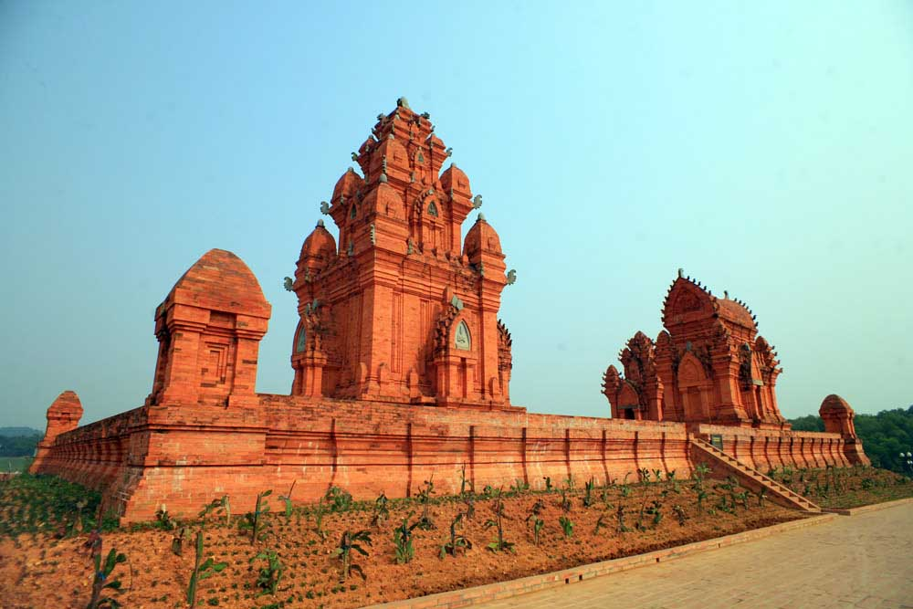
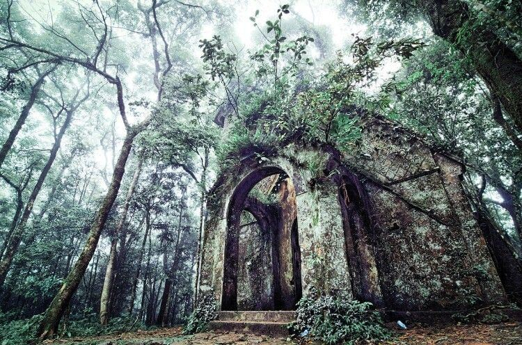

Top những địa điểm check-in siêu HOT khi đến Sơn Tây
1. Làng Cổ Đường Lâm
Làng cổ Đường Lâm nằm cách 44 km về phía tây của trung tâm thành phố Hà Nội, thuộc thị
xã Sơn Tây, Hà Nội. Tuy thường được gọi là làng cổ nhưng thực ra Đường Lâm từ xưa gồm 9 làng thuộc
tổng Cam Giá Thịnh huyện Phúc Thọ trấn Sơn Tây, trong đó 5 làng Mông Phụ, Đông Sàng, Cam Thịnh, Đoài
Giáp và Cam Lâm liền kề nhau. Các làng này gắn kết với nhau thành một thể thống nhất với phong tục,
tập quán và tín ngưỡng hàng ngàn năm nay không hề thay đổi. Nơi đây còn được gọi là đất hai vua do
là nơi sinh ra Phùng Hưng và Ngô Quyền.
Làng cổ Đường Lâm hiện nay có tổng cộng 956 ngôi nhà cổ, những ngôi nhà nằm ẩn mình và phủ màu rêu
phong trên bề mặt những viên ngói mũi ri, tạo nên hình thù võng lưng, gắn liền với nhà sàn, vườn,
bếp, nhà ngang, giếng nước, chuồng trại, cây rơm, ao. Nằm trong trung tâm của quần thể di tích làng
cổ Đường Lâm, còn có di tích Nhà thờ Thám Hoa Giang Văn Minh. Đền thờ Phùng Hưng (Bố Cái Đại Vương)
và đền, lăng Ngô Quyền.
Bạn có thể đi du lịch làng cổ Đường Lâm bất cứ thời điểm nào trong năm. Tuy nhiên, mùa lễ hội và mùa
lúa chín là thời điểm thích hợp hơn cả cho một chuyến du hí. Đi tới đây vào mùa lúa chín tháng 9
hoặc tháng 5 bạn sẽ được chiêm ngưỡng thêm những con đường làng rát đầy rơm khô, ngửi mùi hương của
rơm rất thú vị.
2. Làng Văn Hóa Các Dân Tộc Việt Nam
Làng Văn hóa các dân tộc Việt Nam cách Hà Nội 40km do đó chỉ mất khoảng 35 – 40 phút
lái xe từ nội đô đi đến làng. Có nhiều cách để đến Làng Văn hóa các dân tộc Việt Nam, nhưng tuyến
được được lựa chọn nhiều nhất là đi theo đường Quốc lộ 32. Bởi đường này ngoài ưu điểm rộng rãi, dễ
đi còn rất thuận tiện cho việc ăn uống, nghỉ ngơi và tham quan các địa điểm nổi tiếng khác của khu
vực Sơn Tây, Ba Vì.
Nằm ở thị xã Sơn Tây, làng Văn hóa các dân tộc Việt Nam là nơi diễn ra nhiều lễ hội hàng năm, các lễ
hội được tổ chức mang nét đẹp văn hóa tinh thần của mỗi cộng đồng người. Nếu có cơ hội tới đây, bạn
hãy cố gắng tới thăm tất cả những nét độc đáo trong kiến trúc nhà ở nhé! Điều đặc biệt bạn sẽ được
chính họ giới thiệu về những thói quen, phong tục tập quán và sinh hoạt cộng đồng, hãy cùng khám phá
những nét đa dạng trong lối sống và tín ngưỡng của các dân tộc anh em ở đây, bằng cách dành những
ngày cuối tuần ghé thăm nơi này nhé!
3. Vườn Quốc Gia Ba Vì
Với diện tích hơn 11.460ha, nằm trên địa phận huyện Ba Vì (Hà Nội), Vườn Quốc gia Ba Vì
là địa điểm không thể bỏ qua đối với những du khách ưa khám phá, mạo hiểm.
Đây là khu sinh thái tuyệt vời. Vườn Quốc Gia Ba Vì thuộc huyện Ba Vì - Hà Nội. Ở đây bạn có thể
thỏa mình vào thiên nhiên kỳ thú, loại bỏ nhiều phiền muộn tránh xa mọi ồn ào của cuộc sống. Đây
cũng là chia sẻ của nhiều người khi
đã từng đến đây và còn muốn quay lại thêm nhiều lần hơn nữa. Vào tiết trời thu, là mùa hoa Dã quỳ nở
đẹp. Bạn sẽ chìm đắm trong sắc vàng của loài hoa này. Một loài hoa tuyệt đẹp. Đây là địa điểm phượt
lý tưởng cho các bạn muốn thỏa sức với thiên nhiên. Có rất nhiều canh đẹp để bạn có thể check-in
cùng bạn bè và khám phá những điều thú vị.